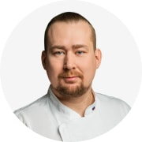

Узнайте, как приготовить вкусные блюда на завтрак с учётом кулинарных особенностей регионов России.
ко всем шеф-поварам

2023
Александр Волков-Медведев
шеф-повар ресторана Ruski, Москва
Москва
Панорамный ресторан Ruski принадлежит 354 Restaurant Group братьев Васильчуков. Самый высокий ресторан Европы занимает весь 85-ый этаж небоскреба «Око», где расположена одна из самых популярных смотровых площадок Москвы #Вышетольколюбовь. С момента открытия в 2016 году ресторан русской кухни с ледяным баром и 8-тонной русской печью стал туристической достопримечательностью столицы.